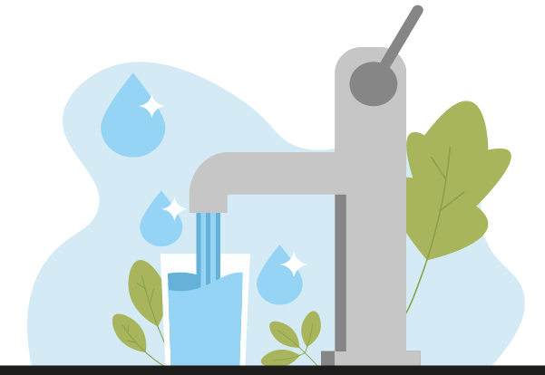

The Importance of Clean Water and Sanitation
Access to clean water and sanitation is a fundamental human right. Despite this, millions of people around the world still lack these basic necessities. This article explores the challenges and solutions related to clean water and sanitation.
Challenges
The lack of clean water and sanitation facilities poses significant health risks. Waterborne diseases, such as cholera and dysentery, are prevalent in areas with poor sanitation. Additionally, the time spent collecting water can prevent children from attending school and adults from working.
- Health Risks: Contaminated water leads to numerous health issues.
- Education Impact: Children, especially girls, are often kept out of school to fetch water.
- Economic Consequences: Time spent collecting water affects economic productivity.
Solutions
Several solutions can address these challenges, including the construction of wells, the implementation of water purification systems, and the promotion of hygiene education. Governments and organizations worldwide are working tirelessly to ensure that everyone has access to clean water and sanitation.
Technological Innovations
Technological advancements have paved the way for new solutions in clean water and sanitation. Solar-powered water purification systems, for instance, can provide clean water in remote areas without reliable electricity.
Community Engagement
Community involvement is crucial for sustainable solutions. Local communities must be engaged in the planning and implementation process to ensure that the solutions are culturally appropriate and long-lasting.
Policy and Advocacy
Strong policies and effective advocacy are essential for driving change. Governments need to prioritize water and sanitation in their development agendas, and global partnerships must continue to advocate for resources and attention to this issue.